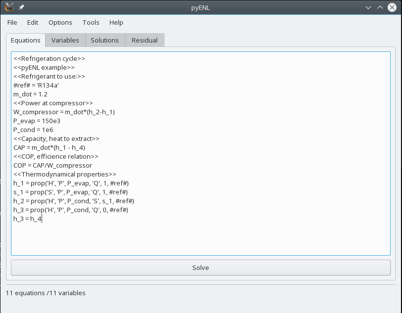
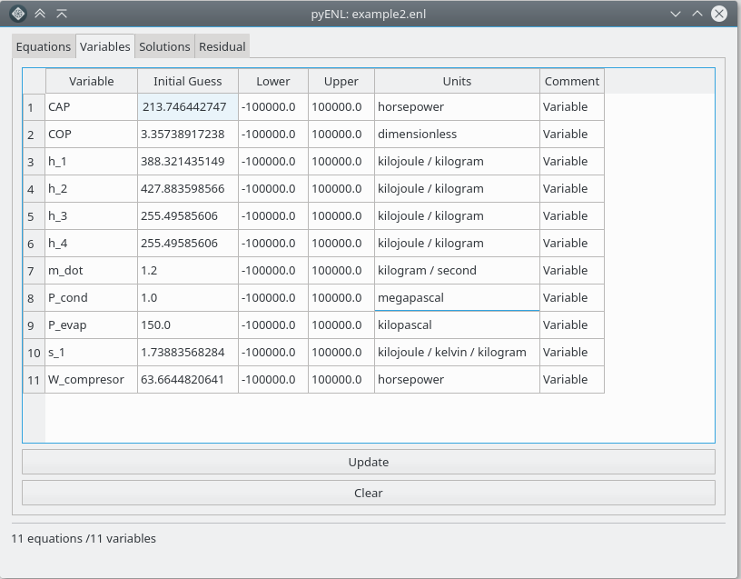
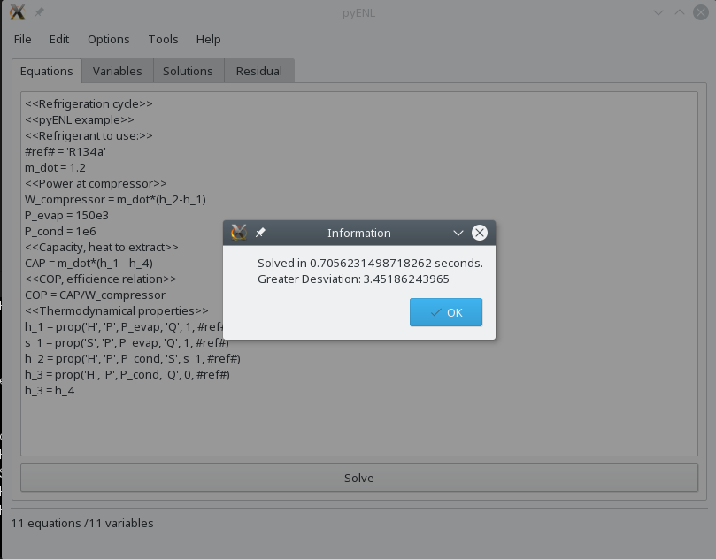
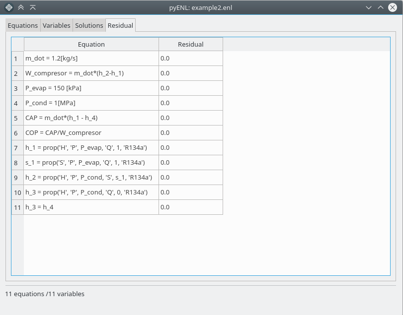

pyENL
Descripción.
pyENL es un solucionador de ecuaciones no lineales con enfásis en problemas de ingeniería. La base se centra en ayudar al estudiante para que este solo se concentre en el planteamiento de un problema en cuestión y no en el proceso lento y repetitivo de solución iterativa (o no.)
¿Cómo se logra?
pyENL hace uso de varios algoritmos para solucionar ecuaciones no lineales multidimensionales (de funciones vectoriales, es decir sistemas de ecuaciones no lineales) incluídas en las librerías del paquete de cálculo científico SciPy
¿Cuál es el algoritmo principal a usar?
Las subrutinas hybrd-hybrj de MINPACK son usadas por su buena convergencia y velocidad de cálculo (están programadas en FORTRAN, lenguaje idóneo para cálculos computacionales rápidos) son usadas como solver por defecto de programa. Sin embargo este puede cambiarse con los otros disponibles en las librerías de SciPy. (Enlace a esto)
¿Cuál es el estado actual de desarrollo del proyecto?
En la actualidad el creador del mismo, Jhon Valencia (@jon85p) y Miguel Gómez (@mangel2095) estamos trabajando con código. Otros colaboradores están trabajando en algoritmos de trabajo y demás.
Ya se pueden resolver sistemas de ecuaciones escritos en un archivo de texto, incluso cuando estos involucran uso de propiedades termodinámicas de fluidos. Actualmente trabajamos en pulir ese código base que será usado luego por una interfaz gráfica que en su momento servirá como vínculo entre el usuario común y el programa. Estamos trabajando con el manejo de las unidades de las variables y en la GUI como tal.
Actualmente también estamos buscando cómo organizar en bloques de ecuaciones los sistemas introducidos por el usuario para agilizar la solución de sistemas extensos de ecuaciones. Para la primera versión beta, que se espera se libere en Febrero estamos puliendo la posibilidad de importar archivos desde ficheros EES y en incorporar funciones de ingeniería.
Capturas de pantalla
   La versión en línea de comandos, ver video:
Contacto
Correo electrónico: pyenlsoft@gmail.com
Grupo de Telegram donde constantemente estamos comunicándonos sobre el proyecto: Enlace